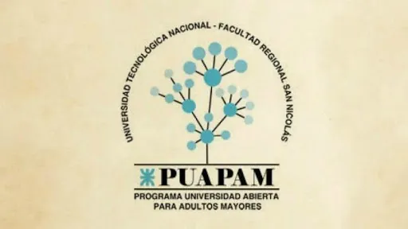

Cursos de idiomas (Centro de Idiomas)
Oferta de cursos de inglés en modalidades presencial y virtual: niveles conversacional, inglés para viajeros, y cursos autogestionados como Inglés Legal e Inglés Marítimo (inscripciones abiertas en 2025-2026).
La Secretaría de Extensión Universitaria y Cultura de la Facultad Regional San Nicolás promueve la vinculación entre la Universidad y la comunidad, fomentando la transferencia de conocimientos, la capacitación, la actividad cultural y la cooperación con el entramado productivo local y regional.

Promover la participación activa de la comunidad universitaria en el ámbito socioproductivo local y regional, consolidando el vínculo de la Facultad Regional San Nicolás con su comunidad.

La extensión articula la transferencia de conocimientos entre la Universidad y su entorno para contribuir al desarrollo social, económico y cultural. Entre sus objetivos están coordinar acciones con organizaciones públicas y privadas, realizar convenios, incrementar actividades de capacitación y fortalecer la relación con instituciones culturales y sociales de la región.
La Secretaría desarrolla convenios, impulsa programas de capacitación y formación para la comunidad, promueve acciones culturales y programas para adultos mayores, y participa en eventos y proyectos de transferencia tecnológica. Entre sus áreas figuran la Subsecretaría del Graduado, el Centro Cultural FRSN, el Programa Universidad Abierta para Adultos Mayores (PUAPAM) y el área de Capacitación.
La Secretaría publica y organiza periódicamente cursos, jornadas y programas para la comunidad, empresas y docentes. A continuación algunas acciones y ofertas recientes (extraídas del sitio oficial):
Oferta de cursos de inglés en modalidades presencial y virtual: niveles conversacional, inglés para viajeros, y cursos autogestionados como Inglés Legal e Inglés Marítimo (inscripciones abiertas en 2025-2026).
Programas orientados a empresas del entramado productivo local: Buenas Prácticas de Manufactura (BPM), Sistema de Gestión de Calidad, instalación de aires acondicionados, y cursos a medida para personal de empresas.

Encuentros y cursos para docentes: formación sobre sustentabilidad, tecnologías ágiles en la enseñanza, aula efímera y propuestas ligadas a la Red Cooperativa de Formación SIED.

Ejemplos recientes: Capacitaciones en IA Generativa (GenAI Pathway), trabajos en altura, RCP para deportistas y entrenadores, y cursos cortos de verano en áreas técnicas y artísticas.

Actividades e inclusión educativa para adultos mayores, impulsadas por el Programa Universidad Abierta para Adultos Mayores.

Oferta de cursos autogestionados y capacitaciones en plataformas virtuales (SIED, E-learning Total) con certificados digitales.
Consulta requisitos, fechas y procedimientos para inscribirte a nuestros programas de grado y posgrado.
Programa UTN Sustentable: prácticas educativas con impacto sostenible (inscripción abierta, 2026).

Iniciativas de formación en GenAI Pathway en colaboración con Kinetic Talent (2025).
Convocatorias periódicas para cursos técnicos, trabajos en altura, RCP y cursos cortos de verano.